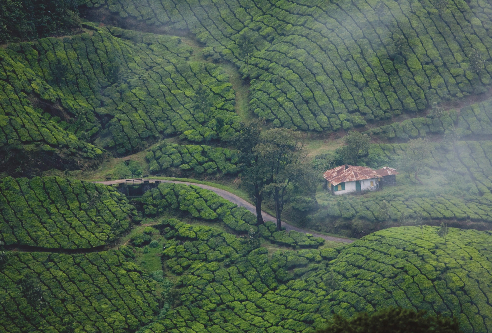

Kerala
KERALA
God's Own Place
CENTER OF ATTRACTIONS
-

MUNNAR
Munnar is a hill station located in the Idukki district of Kerala. Situated at an altitude of 5,200 feet, this town attracts hordes of tourists every year. This traditional beautiful town is popular for its tea estates. The name Munnar is derived from the words Moonu (three) and Aaru (river), referring to the towns location at the confluence of Madhurapuzha, Nallathanni and Kundaly rivers.
-

KUMBALANGI
Kumbalangi Integrated Tourism Village Project is a unique initiative to transform the tiny island of Kumbalangi into a model fishing village and tourism spot. It is the first of its kind in India and is located in Kochi. It is blessed with many natural wonders and the people who visits are treated to many a rare treat.Kumbalangi is surrounded by backwaters. Chinese Fishing Nets cover the island and the village boasts of rich aquatic life.
-

KUMARAKOM
Kumarakom,situated 13 Kms away from Kottayam is a sleepy little village on VembanadLake(largest lake in Kerala) .It offers wide variety of flora, exotic sightseeing, boating and fishing experience. The bird sanctuary spread across 14 acres is safe home for many migratory birds like Siberian stork, wild duck etc. They live with other birds in flocks such as darters, herons, egret, waterfowls and cuckoos are fascinating sight for the visitors. hacklink hizmeti paykwik. Kumarakom has a moderate climate throughout the year.
-

THIRUVANATHAPURAM
The capital city of Kerala, Thiruvananthapuram or Trivandrum, is an appealing blend of a strongly rooted heritage and a nostalgic colonial legacy. Trivandrum is a gateway to nearby popular beach towns of Kovalam and Varkala.The Padmanabhaswamy temple (also known as Anantha Padmanabhaswamy temple) is a must-visit temple of India. Other famous temples in Trivandrum include the Attukal Bhagawati temple, the Aazhimala Siva Temple, the Karikkakom Chamundi Devi Temple, and the Pazhavangadi Ganapathy Temple.
EXPERIENCES
Posted on June 18, 2013 by sudhagee
I have been to Kerala thrice and all my trips to the God’s own country are worth mentioning.
Ever since my first ever Malayali friend showed me the snaps of picturesque Munnar , i couldn’t resist the
relentless desire to visit the place.Hill station of Southern India was something totally unheard of.
Call it my ignorance but i just couldn’t wrap my head around the fact that there could be fog ,
mountains and most shocking - cold in South.
TRANSPORT:Auto drivers are quite honest and friendly , they charge you by the rate & speak decent English. This is one of the important aspect of travelling coz last thing you wana do on your trip is to bargain
PEOPLE:Not to impress the Malayali readers but i genuinely found an average Keralite very warm and amiable to interact with, irrespective of age and gender. I still do.
Unlike the general perception & the instruction given by my friend about the strict no usage of Hindi among the local , i was quite surprised when my queries were answered in Hindi after i inquired them in English.
Athirappilly Falls
Thushargiri falls - Kozhikode
Mananchira , Kozikode.